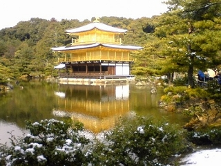
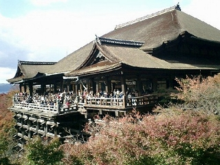

金閣寺

鹿苑寺（ろくおんじ）は、京都市北区にある臨済宗相国寺派の寺。建物の内外に金箔を貼った3層の楼閣建築である舎利殿は金閣（きんかく）、舎利殿を含めた寺院全体は金閣寺（きんかくじ）として知られる。相国寺の山外塔頭寺院である。
清水寺

清水寺（きよみずでら）は、京都府京都市東山区清水にある寺院。山号を音羽山。本尊は千手観音、開基（創立者）は延鎮である。もとは法相宗に属したが、現在は独立して北法相宗大本山を名乗る。西国三十三所観音霊場の第16番札所である。